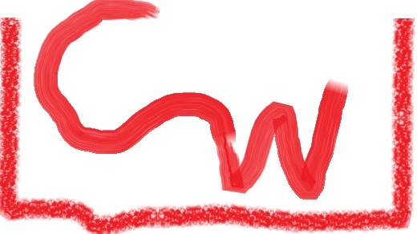

Types of families
Single-parent family
A single-parent family consists of a parent(mother or father)
raising one or more children on their own. The parent provides
food or simplely is the breadwinner.The parent also instills displine
as well as cares and looks after them. With all of this responsibilities
the parent is usually strained ending up laking in some of this aspects.
Benefits of single-parent family
The parent feels independent
Calmer because of absense of parental fights.
Non-benefits of a single-parent family
- Lacks a mother/father figure.
- Is hardwork for the parent to bring up the children alone.
- Child wishes for the presence of the other parent.
- The parent may not be able to support the child all
the time.
- The child may opt to be mischievous because of the perents
continued parental supervision.
monogamous family
Commonly known as nuclear family is what most consider
as the ideal family. It consists of a father and mother and
the children.The father is usually the head of the family in charge
of the family`s financial stability whilst the mother looks after
the family and also in charge of displine among the children.
Benefits of a nuclear family
- The family is more stable as the two parents
support each other.
- The children get maximum supervision from
the two parents
- Responsibities are shared among the two parents.
- Children can manage to see their parents more often.
Non-benefits of nuclear family
- Parents may be prone to fights.
- Hostility between the parents may occur
on how best to raise them.
- The children may be misguided by the
parents different views.
bonded family
This is a family in which two separate families merge
into one. This may be due to divorce on their previous
families or death of their spouse(wife or husband).The families
are forced to remarry for their personal reasons or that of their
children.So two families become one.
Benefits of a step family
- A motherly/fatherly figure is created for the children.
- A better quality of life may be acquired .
- Responsibilities are then shared among the
two parents.
Non-benefits of a stepfamily
- Children may find it hard to adapt.
- Respect is lacked for the new parent.
- Jeolousy or unappropriate sexual behaviour
develop among the children.
- There may develop confusion among the
parents on who should do what.
- A parent may dislike the spouse`s children.
Polygamous family
This is a family whereby the husband has more than
one wife.The many wives may live together but in most cases
, the wives usually get their own houses. This is usually done
by wealthy man who can afford to take care of the vast family.
Each wife may have her own children and the husband usually moves from
house to house in a bid to satisfy all his wives.
Benefits of a polygamous family
- There is divition of labour.
- Advantage to a farmer whereby he gets
manpower
- Increases efficiency in terms of job handling.
Non-benefits of polygamous family
- Strains the husband economically
- Prone to poverty.
- Exploitation of women and children.
- child labour.
- Hostility between families.
- will(inheritance) disputes.

Child-headed family
CHADWORK.COM
INTRODUCTION
A child-headed family is one in which a minor is the head of the family.
He/She takes care of all of her siblings or children like a normal parent would do.
Causes of child-headed families
Death of parents :Parents would have died in a car accident or any other cause leaving their children stranded
and alone
Pregnance at early stages : The minor would have got pregnant at a very early age and the parents would
have abandoned her for that leaving her to fend for her baby alone.
Abandonment by parents:Parents would have gone to seek for work or any other place
and never come back.
The running away of children from their homes: Parents would have abused the children emotionally , sexually and physically
making the situation at home for them unbearable.
Sickness of parents :Parents may be alive and well by unable to provide for their family as their medical condition
inhibit them to do so e.g those with HIV AIDs .
Problems of child-headed families
- Their unable to sustain themselves:They would have not got decent jobs because of lack of education
- Usually associated with theft , burglary and pick pocketing : For their lack of education they are unable to
get decent jobs and they opt for theft.
- They convey bad social behaviour in the community : They are associated with things such as drug abuse , use of bad
luggage and other things.
- Their unable to attend school : Because of lack of funds , they cannot afford to go to school.
- They live in poverty : This families usually have nothing , some even scavenging in bins to get food
- Some live in the streets : They cannot afford to live in normal houses.
- Spread and contract diseases as some live in dirty , overcrowded areas : They usually spread various diseases as they interact
with other normal people.
- Looked down upon by the surrounding society or community : Because of their bad social behaviour and characters ,
the society regards them very lowly.
Solutions to the problems
- Provision of incentives by governments to these families: As these could aid their poverty
and reduce bad social behaviour.
- Guidance and Counseling provided by social workers: This could reduce bad social behaviours , domestic abuses and pregnance
at early stages.
- Creation of foster homes for the affected child-headed families to reduce street kids.
- Recruitment to orphanages of street kids and those that have no where to stay.
- Keeping of girls and boys in schools longer to avoid childhood marriages.
- Control and regulation against scunty settlements that promote diseases.
produced by: CHADWORK and CO
2018
0772814650
Carmuzembe@gmail.com
6086 Southwood ,
KWEKWE